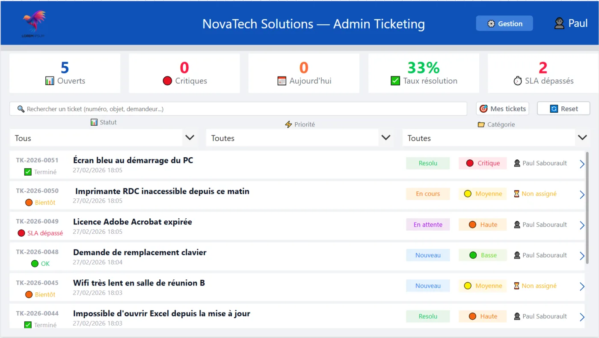
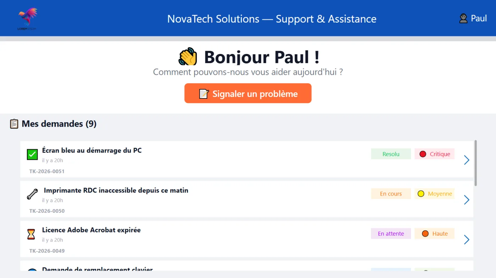
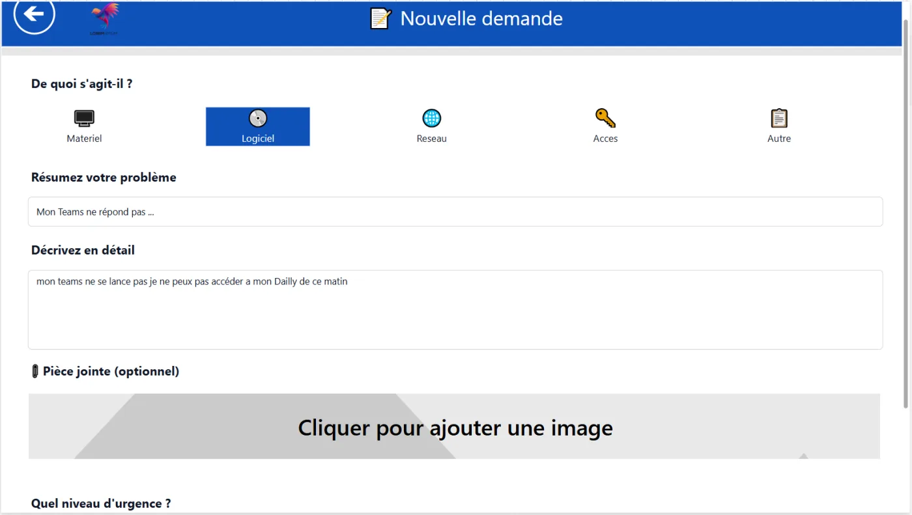
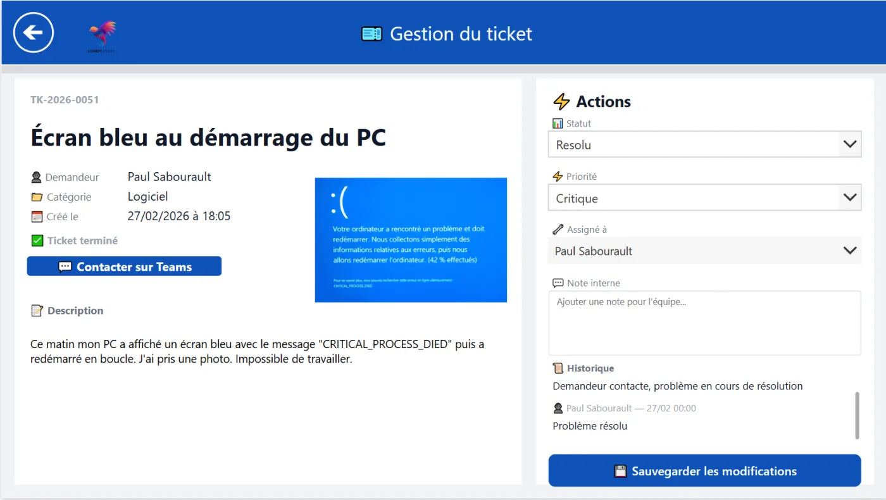
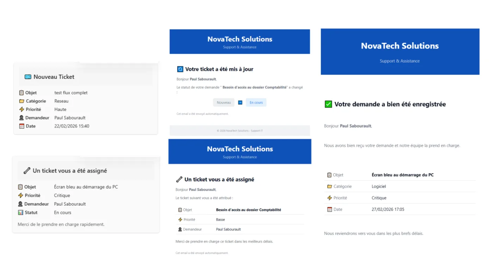
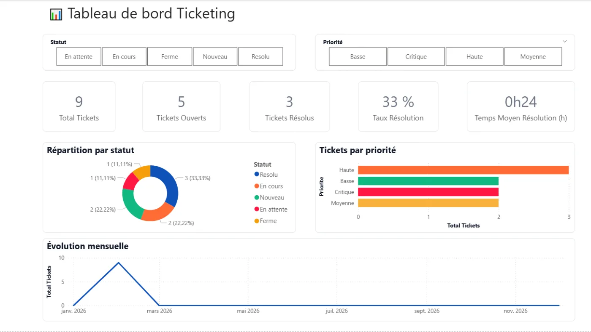
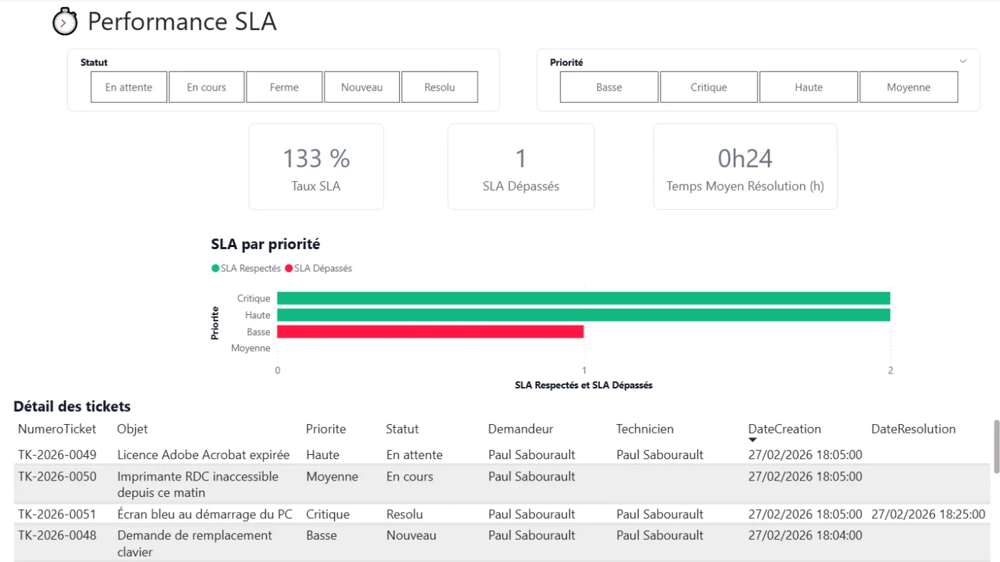
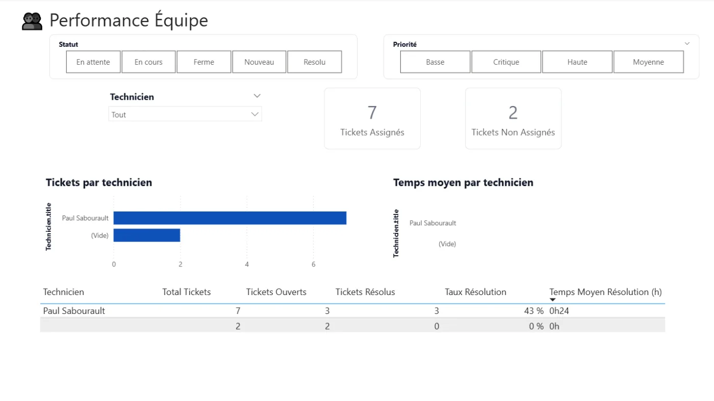
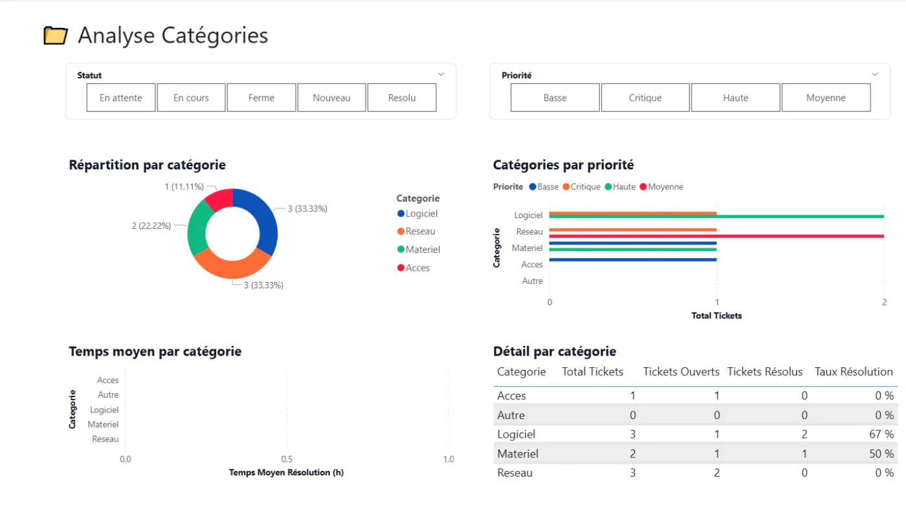

Microsoft · 2026
Ticketing IT
Le support IT dans Microsoft 365
Ticketing IT, c'est le support informatique simplifié : un portail où les utilisateurs créent une demande en 30 secondes, un tableau de bord complet côté admin, et un déploiement en une demi-journée. 100% dans Microsoft 365.

Ticketing ITL'idée
Le support IT, sans nouvel outil ni abonnement.
01 Le pourquoi
Dans beaucoup d'entreprises, les demandes IT partent dans tous les sens : un email par-ci, un message Teams par-là, un coup de fil, quelqu'un qui passe au bureau. Résultat : des demandes qui se perdent, aucun historique, zéro visibilité sur ce qui bloque. Ticketing IT remet de l'ordre, sans imposer un nouvel outil à apprendre.
“ Votre support IT, enfin sous contrôle. ”

02 La démarche
a.Simple pour l'utilisateur
Un portail à trois champs, une demande créée en 30 secondes, avec suivi du statut et historique. Pas de formation nécessaire.
b.Complet pour l'admin
Un tableau de bord avec KPI, SLA en temps réel, gestion des rôles, catégories et équipes, administrable depuis l'application.
c.Automatisé
Notifications par email et Teams à chaque étape, récapitulatif quotidien. Rien ne passe à la trappe.
d.100% Microsoft 365
Construit sur SharePoint, Power Apps, Power Automate, Power BI et Teams. Les données restent chez le client, en France.
Ticketing IT est un produit abouti, déployable en une demi-journée, et commercialisé sous la marque PowerFlows. Une vraie alternative aux solutions du marché souvent coûteuses en abonnement : un achat unique, et la solution est à vous.
Galerie







